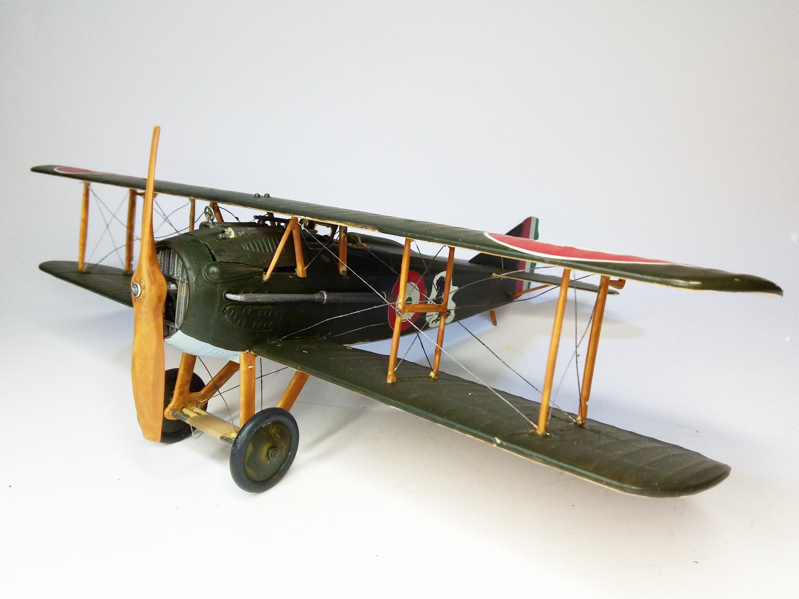
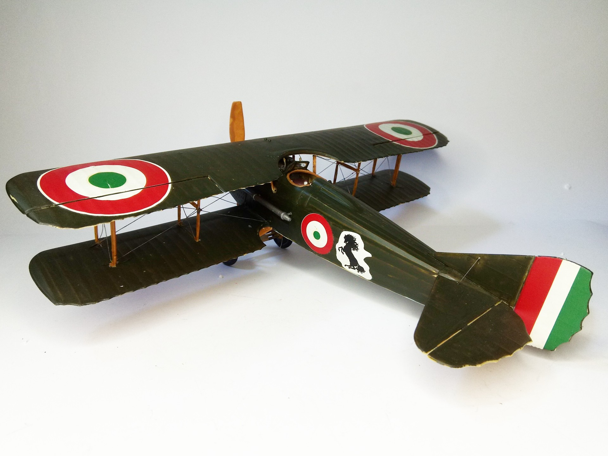

Aerei · scale model archive
Spad XIII
Spad XIII — Kit: Revell, Scale: 1/28. Markings of the italian fighter ace Francesco Baracca, the prancing horse marking was eventually taken up by…

Photo gallery

English description
Markings of the italian fighter ace Francesco Baracca, the prancing horse marking was eventually taken up by Ferrari
#1/28 #Revell #Spad
Descrizione italiana
Insegne dell’asso italiano Francesco Baracca; il cavallino rampante fu poi ripreso dalla Ferrari.